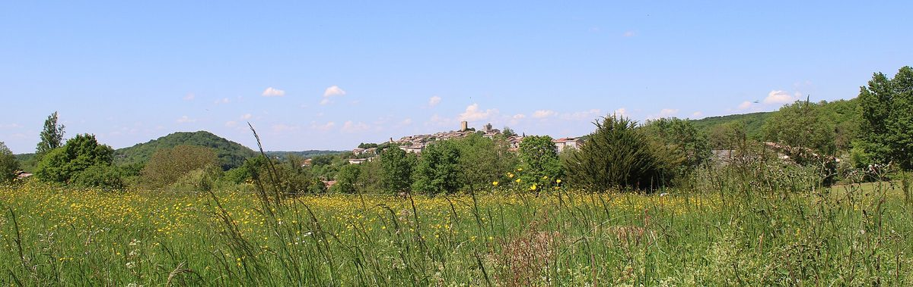

프랑스 오리냐크 시민 태양광 설명회에 80명 넘게 모여…주변 약 20km 집 지붕 모아 '1인 1표'로 운영

면사무소·제3의 장소 라 글리사드·ECLR 옥시타니·PETR 함께 추진, 지역자연공원 지원…설치 후보지 몇 곳 확인·가치 헌장 작성 뒤 지붕 주인 참여 호소, 용량·사업비는 아직 안 나와
프랑스 오트가론주 오리냐크(Aurignac)에서 마을과 주변 집 지붕에 태양광을 올리는 시민 발전소 사업의 주민 설명회가 10월 28일 생미셸 문화센터 영화관에서 열려 80명 넘는 주민이 참석했다. 사업은 오리냐크 면과 제3의 장소 '라 글리사드(la Glissade)', 시민 재생에너지 네트워크 ECLR 옥시타니, 농촌 지역 균형 거점인 PETR 코맹주 피레네가 함께 꾸린 모임이 1년여 전부터 준비해 왔으며 지역자연공원(PNR)이 돕고 있고, 설명회에서는 장미셸 로세고(Jean-Michel Losego) 면장과 ECLR 옥시타니 활동가, 이웃 아리에주의 시민 발전소 '에클라 EnR(Ecla EnR)' 대표 등이 사업 구조와 앞선 경험을 설명했다. 모임은 오리냐크와 주변 약 20km 안에서 조건이 맞는 집 지붕에 패널을 설치하고, 시민 윤리 금융으로 돈을 모아 한 사람이 한 표를 갖는 공동 운영 방식으로 꾸리며, 생산한 전기는 팔거나 스스로 쓰겠다는 구상을 내놓았다. 사업 쪽은 수익률은 적당한 수준에서 길게 가져가되 투기 대신 환경과 지역 경제에 돌아가는 효과를 앞세우겠다고 밝혔다. 모임은 그동안 작업 모임을 나누고 설치 후보지 몇 곳을 확인했으며 가치 헌장을 쓰고 문화재 건축가(ABF)와도 협의했고, 이제 지붕을 내줄 집주인들의 참여를 호소하고 있다. 이 사업은 2050년까지 지역 에너지 수요를 재생에너지로 채우겠다는 PETR 기후계획, 농지 대신 지붕·주차장·기존 건물부터 태양광을 올리라는 지역 국토계획(SCoT)의 방향과도 맞닿아 있으나, 설비 용량과 참여 지붕 수, 사업비, 법인 형태는 아직 알려지지 않았다.
시민에너지 관점
설명회에 80명 넘는 주민이 모였는데도 용량과 사업비보다 지붕 주인을 먼저 찾는다는 것은, 시민 발전소의 크기가 결국 주민이 내놓는 지붕의 수로 정해진다는 뜻이다. 흩어진 집 지붕을 모아서는 수익이 나지 않는다는 우려가 있을 수 있지만, 이 사업은 처음부터 높은 수익률 대신 오래가는 적당한 수익과 지역 경제 효과를 목표로 내걸었고, 그 약속을 지키게 하는 장치가 출자 액수와 상관없는 1인 1표 운영이다. 농지 대신 지붕과 주차장부터 쓰라는 지역 계획의 원칙도, 지붕을 내준 주민이 발전소의 공동 주인이 될 때 실제 설치로 이어질 수 있다. 국내에서도 농지·산지 태양광 갈등을 줄이려면 지자체가 주택과 공공 건물 지붕 목록부터 정리해 주민이 소유하는 발전 조직에 먼저 열어 줘야 한다.
출처: 프티트 레퓌블리크(Petite République) 2026-10-30 실비 니콜라(Sylvie Nicola) 원문 보기
仏オリニャックの市民太陽光説明会に80人超…周辺約20kmの住宅屋根を集め「1人1票」で運営
村役場・サードプレイス「ラ・グリサード」・ECLRオクシタニー・PETRが共同で推進し地域自然公園が支援…設置候補地を数カ所確認・価値憲章を作成し屋根の所有者に参加呼びかけ、容量・事業費はまだ示されず
フランス・オート＝ガロンヌ県オリニャック（Aurignac）で、村と周辺の住宅の屋根に太陽光パネルを載せる市民発電所事業の住民説明会が10月28日、サン＝ミシェル文化センターの映画館で開かれ、80人を超える住民が参加した。事業はオリニャック村、サードプレイス「ラ・グリサード（la Glissade）」、市民再生可能エネルギーのネットワークECLRオクシタニー、農村地域の均衡拠点であるPETRコマンジュ・ピレネーが共につくったグループが1年余り前から準備してきたもので、地域自然公園（PNR）が支援しており、説明会ではジャン＝ミシェル・ロセゴ（Jean-Michel Losego）村長やECLRオクシタニーの担当者、隣のアリエージュ県の市民発電所「エクラEnR（Ecla EnR）」の代表らが事業の仕組みや先行する経験を説明した。グループは、オリニャックと周辺約20km以内で条件に合う住宅の屋根にパネルを設置し、市民による倫理的な資金で資金を集め、1人が1票を持つ共同運営で運営し、発電した電気は売るか自家消費する構想を示した。事業側は、収益性はほどほどの水準で長く保ち、投機ではなく環境と地域経済への波及効果を優先すると説明した。グループはこれまでに作業部会を設け、設置候補地を数カ所確認し、価値憲章を作成して文化財建築家（ABF）とも協議しており、今は屋根を提供する住宅所有者の参加を呼びかけている。この事業は、2050年までに地域のエネルギー需要を再生可能エネルギーで賄うというPETRの気候計画や、農地より先に屋根・駐車場・既存の建物に太陽光を設置するという地域の国土計画（SCoT）の方針とも合致するが、設備容量や参加する屋根の数、事業費、法人形態はまだ明らかになっていない。
市民エネルギーの視点
説明会に80人を超える住民が集まりながら、容量や事業費より先に屋根の所有者を探すということは、市民発電所の規模が結局、住民が差し出す屋根の数で決まることを意味する。散らばった住宅の屋根を集めても採算がとれないとの懸念もありうるが、この事業は最初から高い利回りではなく長く続く適度な収益と地域経済への効果を目標に掲げており、その約束を守らせる仕組みが出資額にかかわらない1人1票の運営だ。農地より屋根や駐車場を先に使うという地域計画の原則も、屋根を提供した住民が発電所の共同所有者になってこそ実際の設置につながる。韓国でも農地・山林の太陽光をめぐる対立を減らすには、自治体が住宅と公共建物の屋根のリストを整理し、住民が所有する発電組織に優先して開放すべきだ。
出典: プティット・レピュブリック（Petite République） 2026-10-30 シルヴィ・ニコラ（Sylvie Nicola） 原文を読む
法国奥里尼亚克市民太阳能说明会吸引80多人…汇集周边约20公里内住宅屋顶，按"一人一票"运营
村政府、第三空间"拉格利萨德"、ECLR奥克西塔尼和PETR共同推进，地区自然公园提供支持…已确认几处候选安装点并制定价值宪章，正呼吁屋顶业主参与，装机容量和项目费用尚未公布
法国上加龙省奥里尼亚克（Aurignac）一个在村内及周边住宅屋顶安装光伏板的市民电站项目，10月28日在圣米歇尔文化中心电影厅举行居民说明会，80多名居民到场。该项目由奥里尼亚克村、第三空间"拉格利萨德"（la Glissade）、市民可再生能源网络ECLR奥克西塔尼以及农村地区均衡发展机构PETR科曼日-比利牛斯共同组成的团体从一年多前开始筹备，地区自然公园（PNR）给予支持；说明会上，村长让-米歇尔·洛塞戈（Jean-Michel Losego）、ECLR奥克西塔尼的工作人员和邻近阿列日省市民电站"埃克拉EnR"（Ecla EnR）的负责人等介绍了项目架构和既有经验。该团体提出的设想是：在奥里尼亚克及周边约20公里范围内符合条件的住宅屋顶安装光伏板，通过市民伦理金融筹集资金，按一人一票的方式共同运营，所发电力出售或自用。项目方表示，收益率将保持在适度水平并着眼长期，优先考虑环境效益和对本地经济的回馈，而不是投机。该团体此前已分设工作小组、确认了几处候选安装点、起草了价值宪章，并与文物建筑师（ABF）进行了沟通，现在正呼吁愿意提供屋顶的房主加入。这一项目与PETR气候计划提出的到2050年用可再生能源满足本地能源需求的目标，以及地区国土规划（SCoT）提出的先利用屋顶、停车场和现有建筑而非农田安装光伏的方向相一致，但装机容量、参与屋顶数量、项目费用和法人形式尚未公布。
市民能源视角
说明会已聚集80多名居民，却仍先寻找屋顶业主而不是先定容量和投资额，说明市民电站的规模最终取决于居民愿意拿出多少屋顶。有人可能担心把分散的住宅屋顶凑在一起难以盈利，但这个项目一开始就把目标定为长期适度的收益和对本地经济的效益，而非高回报，保证这一承诺的机制正是与出资多少无关的一人一票运营。先用屋顶和停车场、不占农田的地区规划原则，也只有在提供屋顶的居民成为电站共同主人时，才能真正落到安装上。韩国若要减少农地、山地光伏引发的冲突，地方政府就应先整理住宅和公共建筑的屋顶清单，优先向居民所有的发电组织开放。
来源: Petite République 2026-10-30 Sylvie Nicola 查看原文
More than 80 people turn out for Aurignac citizen solar meeting in France; plan would gather home rooftops within about 20 km and run on one person, one vote
Village council, the La Glissade third place, ECLR Occitanie and the PETR are behind the project, backed by the regional nature park; a few candidate sites identified and a values charter drafted, roof owners now invited to join; capacity and costs not yet set out
More than 80 residents attended a public meeting on October 28 in the cinema of the Saint-Michel cultural centre in Aurignac, Haute-Garonne, France, on a citizen power plant project that would put solar panels on the roofs of homes in and around the village. The project has been prepared for a little over a year by a group made up of the Aurignac municipality, the third place La Glissade, the citizen renewable energy network ECLR Occitanie and the PETR Comminges Pyrénées rural development body, with support from the regional nature park (PNR); at the meeting, Mayor Jean-Michel Losego, an ECLR Occitanie organiser and the head of Ecla EnR, a citizen power plant in neighbouring Ariège, among others, explained how the project works and shared earlier experience. The group set out a plan to install panels on suitable home roofs in Aurignac and within about 20 km of it, raise money through ethical citizen finance, run the plant jointly on a one person, one vote basis, and either sell the electricity or use it on site. The organisers said returns would be modest and long term, with the priority on environmental benefits and on keeping the gains in the local economy rather than on speculation. So far the group has set up working groups, identified a few possible installation sites, written a values charter and met the Architecte des Bâtiments de France, the official in charge of heritage areas, and it is now calling on homeowners to offer their roofs. The project fits the PETR climate plan's goal of meeting the area's energy needs from renewables by 2050 and the local planning framework (SCoT), which puts roofs, car parks and existing buildings ahead of farmland for solar, but its capacity, the number of roofs, its cost and its legal structure have not yet been made public.
Citizen Energy View
That a meeting drawing more than 80 residents still began by looking for roof owners rather than settling capacity and cost shows that the size of a citizen power plant is ultimately decided by how many roofs residents are willing to offer. Some may doubt that scattered home rooftops can add up to a viable project, but this one set out from the start to seek modest, lasting returns and local economic benefit rather than high yields, and the safeguard for that promise is one person, one vote governance regardless of how much each member invests. The local planning principle of using roofs and car parks before farmland can only turn into actual installations when the residents who lend their roofs become co-owners of the plant. In Korea, too, cutting conflict over solar on farmland and forest land means local governments should first draw up lists of home and public building rooftops and open them to resident-owned power organisations first.
Source: Petite République 2026-10-30 Sylvie Nicola Read the original